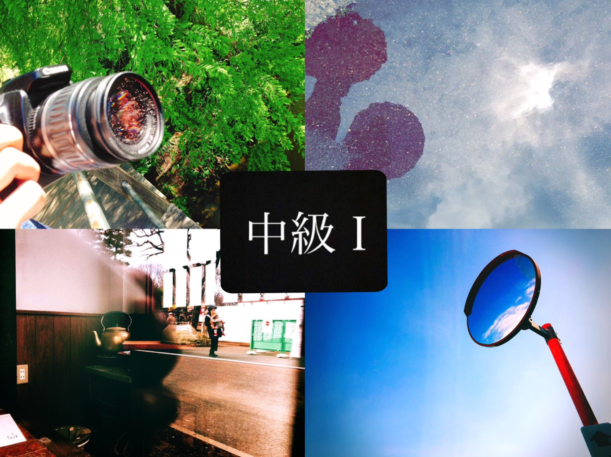
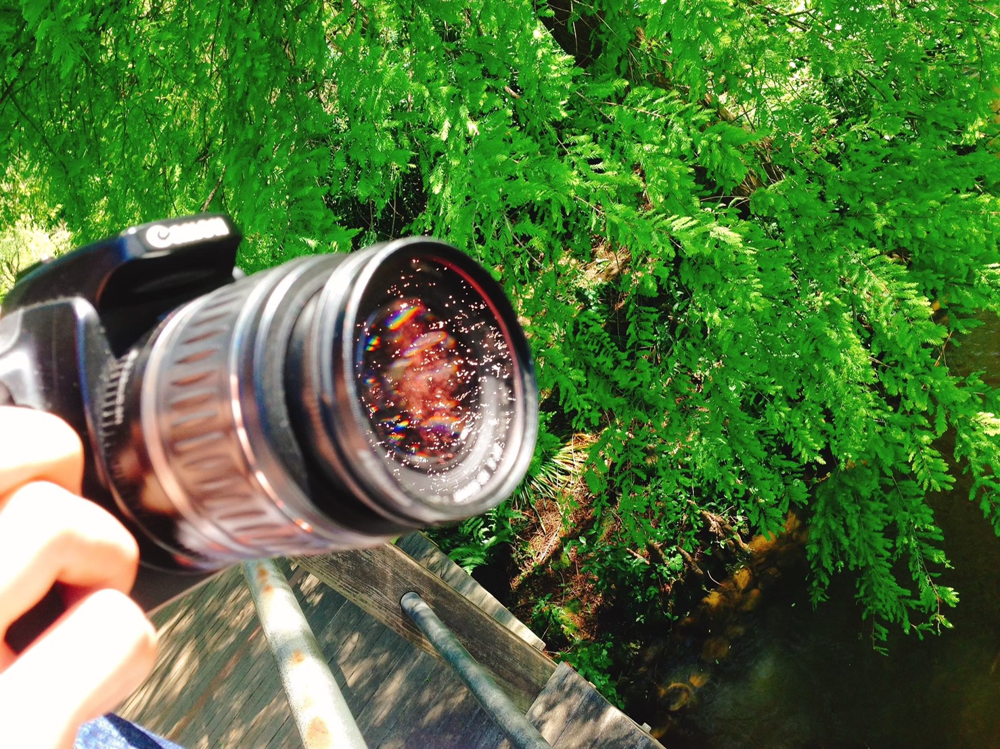
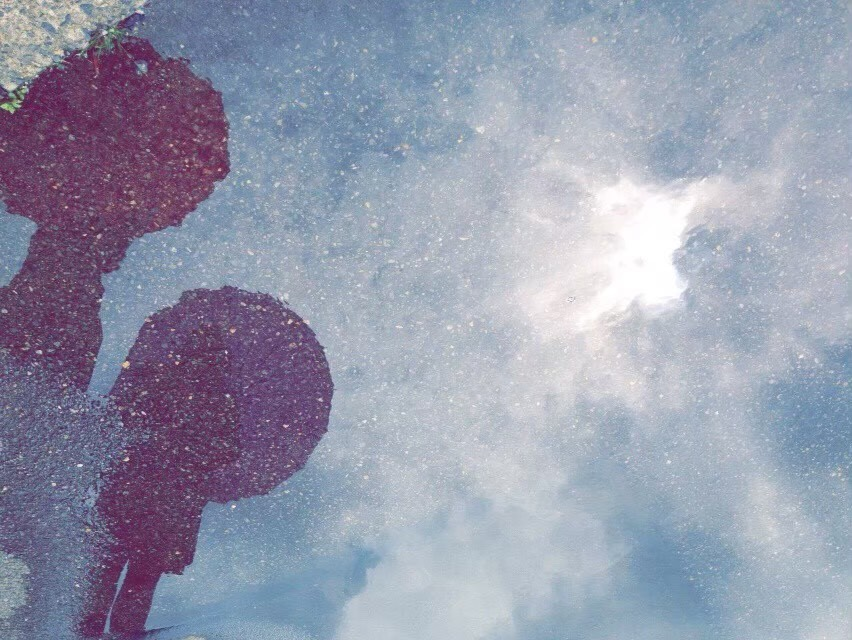
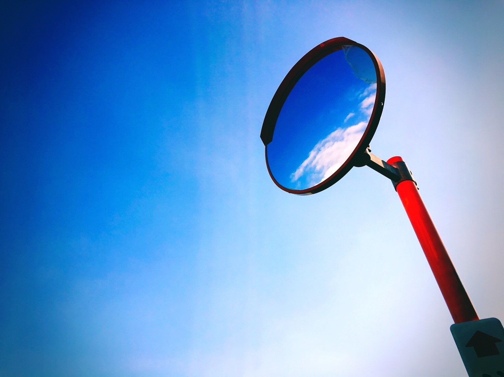

ユニークマスター

皆さんこんにちは。Nanaです。
今回は、ユニークな写真の撮り方をいくつか紹介したいと思います。
中級編からは、少し技術的な部分もあるのですぐに上達はしません。何度も挑戦して、素敵な写真を撮れるようになりましょう!

まずは、カメラのレンズに風景を写したこちらの写真をご覧ください。
晴れた日に太陽の光を上手く利用して撮ってみました。
ちなみに、レンズの中でキラキラしているのは川の水が太陽に反射してできた光です。

続いてこちらの写真をご覧ください。
これは、雨が降った時にできる水溜まりの反射を利用した写真です。
撮影日が曇りだったので、境がハッキリしていませんが、晴れた日は道に突然別世界が現れたような写真が撮れます。

最後は、こちらの写真です。空に雲はないのにカーブミラーには雲が写っている写真です。
これは、晴天かつ少し雲がある時でないと撮れませんがカーブミラーがあれば似たような写真が撮れるはずです。